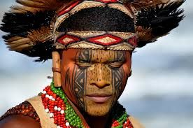
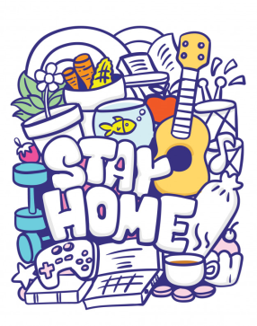
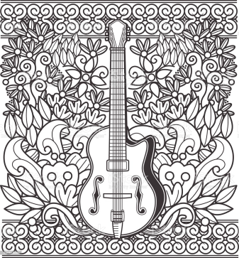
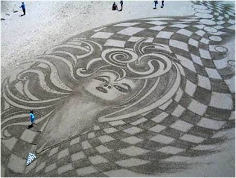

Ana Paula
Olá! As Meninas Super Arteiras são parte de um projeto criado por alunos de Informática, chamado Assunto X. E você, leitor desta página super-cor-de-rosa, foi convocado para ajudá-las na incrível missão de deter o Macaco Louco e todos os feitios do Romero Britto!
Mas antes de tudo, aqui estão os detalhes necessários para concluir essa incrível e colorida missão pelo mundo das Artes!
Grafismo é a arte em que são mais relevantes as formas, as cores e detalhes do que a figura ou representação. Pode ser também uma forma mais sucinta de representar um objeto ou composição de objetos.
Ele é comumente composto por traços, sejam eles curvos ou retilíneos, construíndo uma imagem completa, representando e transparecendo as intenções do artista ao criar a obra.
O grafismo, na cultura indígena, é o conjunto das artes criadas pelos índios a fim de expressar os sentimentos, percepções destes e sua relação com o mundo, como, por exemplo, por meio de pinturas corporais.
Esta arte é uma forma de identificação interna dentro da sua sociedade, além de identificação étnica quando comparada às outras tribo, sendo assim, um importantíssimo marco cultural dentro dos cultos e crenças indígenas.
Algumas características deste tipo de arte são a simetria, formas simples e relacionadas à natureza, sendo, normalmente, feitas pelas mulheres.
Doodles são rabiscos e desenhos, feitos num momento de distração e descontração da pessoa. Sabe aquela última página do caderno, que você sempre desenhava quando não prestava total atenção na aula? Esse é um dos melhores exemplos para um Doodle.
Um Doodle não necessariamente precisa ter formas conhecidas ou uma complexidade grande em seu desenho. Na verdade, a ênfase do conceito de doodle é justamente a liberdade artística gerada a partir de um momento de distração, visto que o desenhista representa seus sentimentos da forma mais transparente e sincera, pois o mesmo não tinha a intenção de reproduzir aquilo.
Existem alguns estudos sobre este tipo de arte, e eles comprovam que o doodle é capaz de liberar as memórias de curto e longo prazo, melhorar a retenção de conteúdo e aumentar a capacidade de atenção do cérebro. Basicamente, o que parece ser um momento distraído, na verdade te ajuda a se manter focado, desenhando sobre coisas que estão repetidamente em sua mente, logo, absorvendo melhor este conteúdo.
Carolina Barbosa e Juliana Nersessian, em conjunto, são as fundadoras da marca Lanó, onde elas criam e desenham sobre paredes, papéis, telas, etc. desde 2014. Seu site conta com belíssimos exemplos de grafismos residenciais, empresariais, e até mesmo em fachadas de muros.
Peter Donnelly é um artista da Nova Zelândia que, aos poucos, foi ganhando uma imensa visibilidade e reconhecimento pelas dimensões e complexidades de seus grafismos. O link a seguir, é a página de um blog de nossa professora de Artes, Juliana Godin, em que é contado um pouquinho mais da história de Donnelly, assim como de diversos outros conteúdos do ramo artístico.
Link Site: Extensão Sala de Artes
As imagens seguintes são obras feitas por uma estudante de Medicina do Canadá, que utilizava dos Doodle art’s como forma de aprendizado. Seu nome é Dr. Michiko Maruyama, e suas foram retiradas de seu instagram.
Hélio Soares, Will Barroso, Romildo Rocha e Amanda Travassos se conheceram na faculdade, em São Luis – MA. Os 4 são os integrantes do grupo artístico denominado Porcolitos. Se apropriando de Doodles bem criativos, os Porcolitos já deixaram sua marca em diversos lugares do país, seja em paredes, murais, e até mesmo carros! O link a seguir conta um pouco mais à respeito da história deste grupo
Ana Paula

Arthur Santana

Gabrielle Souza

João Pedro Lopes

Júlia Lendell

Kauã Santos
Layla

Leônidas José

Letícia Pereira

Luisa Clara

Luiz Fernando

Maria Alice

Maria Eduarda

Matheus Gaston

Matheus Gomes

Tainá Queiroz

Thiago Iulli

Victor Schneider

Vitor Freitas

Yuri Estevão
Ana Paula

Júlia Lendell


Kauã Santos


Layla Dias


Leônidas José


Letícia Pereira


Luisa Clara


Luiz Fernando


Marcos Paulo


Maria Alice


Maria Eduarda


Matheus Gaston


Matheus Gomes


Victor Schneider


Vitor Freitas


Yuri Estevão


Olá! Trazemos aqui informações inúteis, mas ainda contextualizadas com o tema da página, para contar um pouquinho sobre os autores deste site supimpa! Maria Alice Miranda, Victor Schneider e Letícia Leonardo (Também conhecidas como Florzinha, Lindinha e Docinho) são três alunos extremamente talentosos e muito humildes do curso de Informática do CEFET-MG. Nascidos em 2004 e inspirados por sua Professora de artes Juliana Godín, o ódio por Romero Britto fluiu naturalmente logo nas primeiras semanas de aula… E então nasceram as Meninas Super Arteiras!!! (Acho que você já ouviu isso). Usando seus Ultra Super Poderes, o básico de HTML e CSS (e uma miserável tentativa de JavaScript) e principalmente, com a ajuda de seu grande mestre, Coutinho, finalmente esse trio maravilhoso foi capaz de desenvolver todo o conteúdo necessário para se derrotar o Lado Negro das Artes! E junto de você, elas tem a plena certeza de que um futuro cor-de-rosa nos aguarda!
Parabéns!!! Você encontrou o Easter Egg da página! Insira seu nome abaixo.